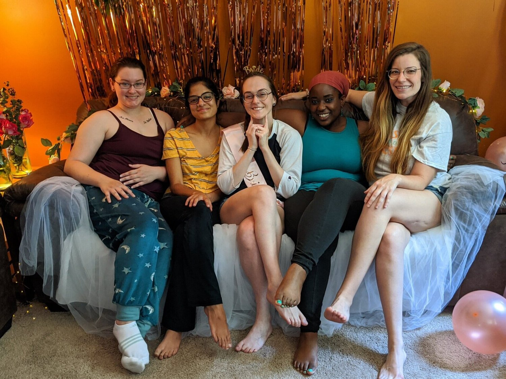
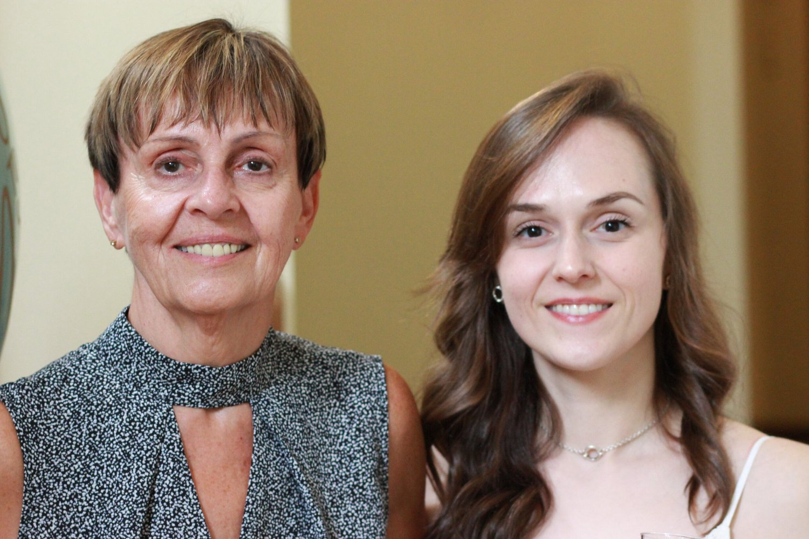
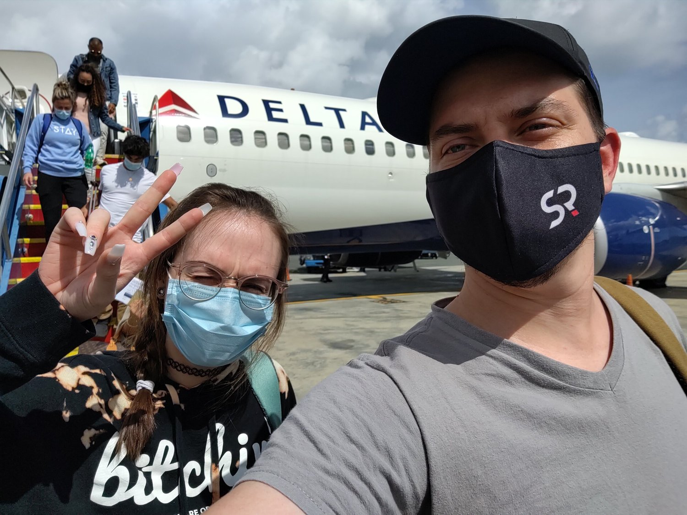
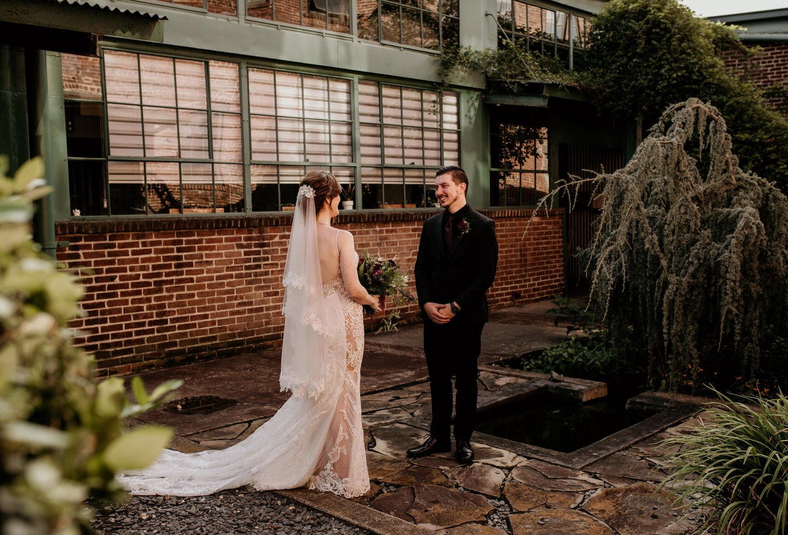
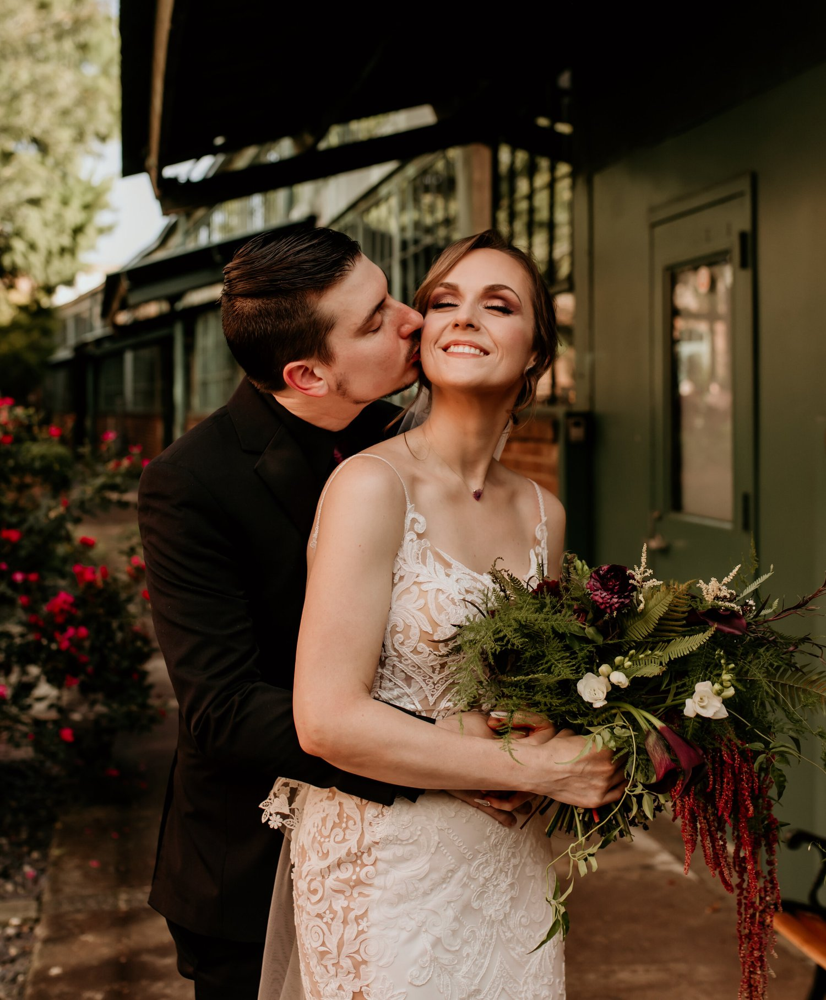

A welcome back
You may have noticed some changes around here (ahem all of The Coconut Diaries has been rehosted on The Food Kimist). First, shucks thanks for noticing. Second, thanks for your patience. Third, let me explain.
I’m gonna reference this post, so if you’re unfamiliar (I don’t blame you, it’s been almost 4 years!!), I’d give it a read for context :)
About 4 years ago, I felt it necessary to take a step back from social media and the blog. As gathered from the post, I was in this place of immense pressure while also feeling like I didn’t totally love what I was doing. I didn’t know what else to do but take a step away for a bit, remove the responsibility, and just see how things go. I was working full time at the CDC, and I just couldn’t balance the work while staying on top of making sure that I loved what I was doing. I was also trying to process the end of two long-term relationships and WHAT my direction was. Looking back at that time (now that ya know…everything has turned out well), I made the best decision I could and I’m so grateful for allowing myself that healing process instead of continuing to put squares into circles.
In the time gone…I focused on my career at the CDC, started a Master’s program for Food Science & Human Nutrition (which I’ll be finishing this year!!), fell out of friend relationships, built new healthier friend relationships, bought a home, got married, healed my relationship with food (and my SELF), left my job at the CDC, and rediscovered myself as a stronger, happier person. I feel like I repeatedly lost myself and found myself again, which I suppose is just a main component of life.
Going through old blog posts has been really eye opening and…I can’t even put words to it. It’s provided a lot of good perspective that I had lost, and I’m glad to come back to it. I had created feelings as if I abandoned everything, almost guilt and embarrassment. But seeing it now, I’m soo proud of and thankful for everything I built and documented, and it makes me eager to continue sharing again.
Right now, the types of things I’m enjoying creating are vegan baked goods (cakes, macarons, cinnamon rolls, you name it. If it’s baked, I want to perfect it, vegan). This is pretty different from the type of recipes I used to share (that’s the food science degree talking :p). Part of my discontentment with what I was creating up to the point that I took a step back was that…in a way it fed into my disordered eating, because my MO was to share low-calorie, healthy treats. I think I needed to completely remove myself from that world in order to truly heal. But I’m very excited over the idea of one day soon having recipes of my own to share again. I love creating and connecting - that’s it. My soul is happy.
I’m currently sharing on Instagram, Tik Tok, Facebook, and Pinterest (really trying on this one) if you’d like to catch up. :)
Thanks for sticking with me, you have no idea. Here’s some pictures to make up for lost time (even though they’re all from 2020).




